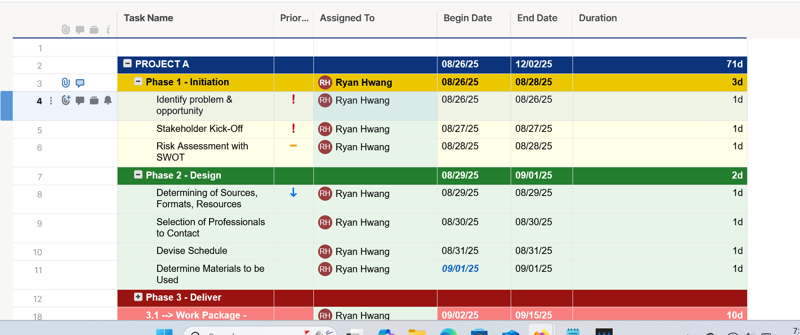
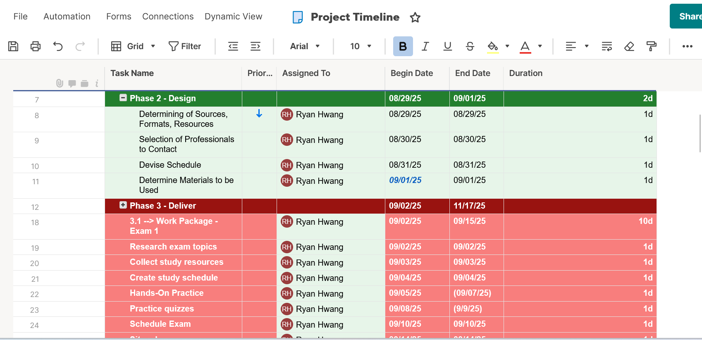
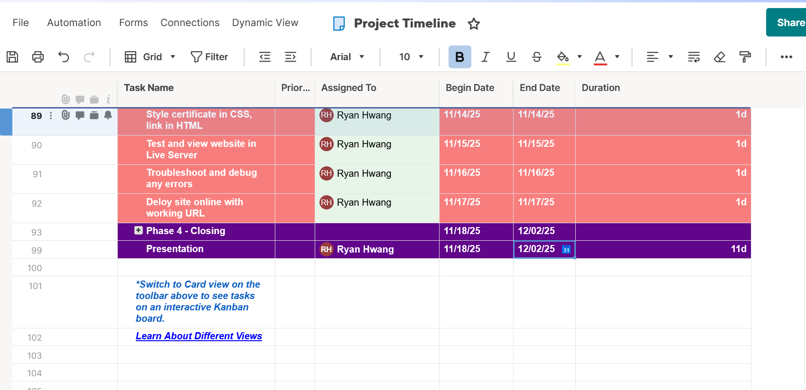
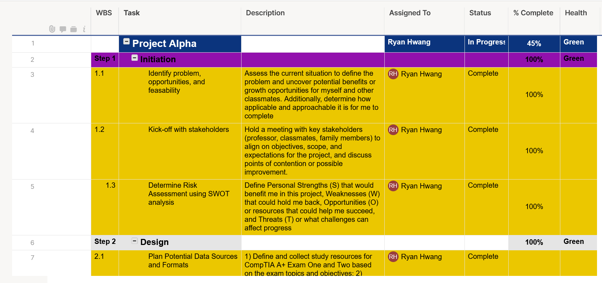
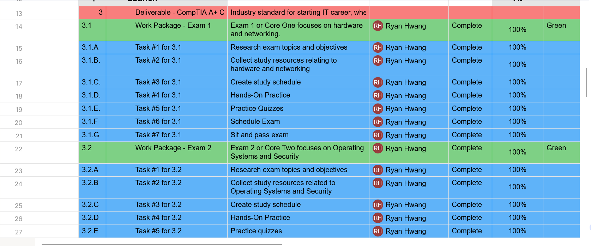

Selected Tool: SmartSheet
Tools Explored:
I tested Monday.com, Asana, and SmartSheet.
Final Choice & Reasoning:
After evaluating multiple project management platforms, I selected SmartSheet as the primary tool for this project. During the evaluation process, Asana presented technical barriers during account setup, specifically within their organizational onboarding workflow, which prevented successful platform access. SmartSheet demonstrated functionality issues with template accessibility and editing capabilities, limiting its practical application for project requirements. Monday.com provided seamless integration with existing Google account credentials and demonstrated reliable functionality across all tested features.
This platform aligns effectively with the selected Predictive methodology through several key capabilities. The system provides comprehensive documentation management for each project phase and process, enabling systematic tracking of all deliverables. Role-based access controls and administrative permissions support the change management requirements inherent in Predictive approaches. The platform's integrated timeline visualization, status tracking, project dashboards, and progress metrics facilitate the detailed planning and monitoring essential for successful Predictive project execution. Additionally, the interface leverages familiar spreadsheet and collaborative platform paradigms, reducing implementation complexity. The platform's risk management features, including task health indicators and customizable risk categorization, support the proactive risk identification and mitigation planning required by the Predictive methodology.
Key Features:
- Various free templates for Project Management formats with Work Breakdown Schedules that fit or can be easily adjusted to suit the Predictive Model, which is a plus for me.
- Ability to successfully import and integrate files from Microsoft Project, Excel, Google Sheets, and Atlassian's Trello
- Can add Sheets to the Workspace (the overall environment where I can add details to my project's structure) in the form of Grids, Gantt Charts, Timeline, or Boards
- Can create Report and add it into the Workspace, wherein the types are Row Report, where it uses data already put into the sheets, or Sheet Summary Report, where it uses sheet summary fields.
Cost Consideration:
In terms of cost considerations, a service being Free or it being paid impacts my choice, in that I am more likely to use the Free version, since I am a college student with not a lot of expendable income. And if the Free version offers the functions and features I need for my work, albeit with limitations, I will take it, so long as I can do my work adequately within the limitations. If not, I look for another free alternative.
Project Structure Setup:
Within the SmartSheet, my project is split into various accessible pages: 1) Task Tracker; 2) Tasks Due; 3) Project Dashboard; 4) WBS by Phase; 5) Project Timeline; and 6) Tasks by Status. For the purposes of this activity, it will pertain to Task Tracker and Project Timeline. Tasks by Status is divided into various columns, where the first column details the Phase number or specific greater component of my project each task or step is within. The title of the phase is next to the box indicating Phase Number, and for each box successively under the title, it details what each task is going to do. The column to the right describes in detail how to better achieve that task, and to the right is who the task is assigned to, in this case, me. To the right of the assigned person is the in-progress status, whether the task is "Complete" or "In Progress" or "Not Started", and to the right of that is the percentage complete metric indicating how far are you into completing the task with the maximum being 100%. To the right shows the start and end dates for each phase and task, with the duration column to the right summarizing totals days needed for each.
Project Timeline is similarly structured to the Tasks by Status, with the entire project and timeline divided into various "Phases" wherein the major project steps and components are fulfilled. Phase 1 is Initiation, Phase 2 is Design, Phase 3 is Delivery, and Phase 4 is Closing. Each phase except for Delivery labels the major task in the box under the Phase Name, and in Delivery, the Phase Name is given but it is further divided into Deliverables (materials that must be completed for the project), Work Packages (critical processes of the materials), and the Tasks themselves within the Work Packages that fulfill Work Packages.
Project Tool Implementation Screenshots
Timeline Dynamic View Photo One

Timeline Dynamic View Photo Two

Timeline Dynamic View Last Photo

Project Tasks Photo One

Project Tasks Photo Two

Implementation Reflection:
What surprised me was how time-consuming and tedious SmartSheet was, since I was used to Excel and its commands, so I had to manually create new roles and implement the data. Additionally, I had to synthesize all the prior information I had about methodology and work breakdown structures so it would fit within the structure of SmartSheet. It was easier than expected to make the visual layout of the SmartSheet look and feel professional, since there are many templates, but it was harder than expected to ensure that SmartSheet would recognize and accept what I wrote, since there were so many preestablished rules, conditions, and dependencies within the document's settings.
Tool Integration Benefits:
- 15+ realistic tasks created with reasonable duration estimates
- 3-5 major deliverables clearly defined and tracked
- Timeline with workflow dependencies established
- Project phases aligned with Predictive methodology requirements
- Real-time progress tracking and status monitoring capabilities
- Professional documentation and reporting features